Project Overview
Goal
This project explores the creation of image mosaics through homography transformations. By computing the geometric relationship between overlapping images, we can warp and blend them to create seamless panoramas. The project demonstrates key concepts in computer vision including perspective transforms, image rectification, and multi-image blending.
Key Techniques
- Homography Estimation: Computing the 3x3 transformation matrix that maps points between image planes
- Image Rectification: Correcting perspective distortion to create orthogonal views
- Image Warping: Applying homography transforms to align images
- Image Blending: Combining multiple warped images into seamless mosaics
- Laplacian Pyramid Blending: Advanced multiresolution blending to eliminate artifacts
Part 1: Raw Pictures
Set 1: Mt.Rainier
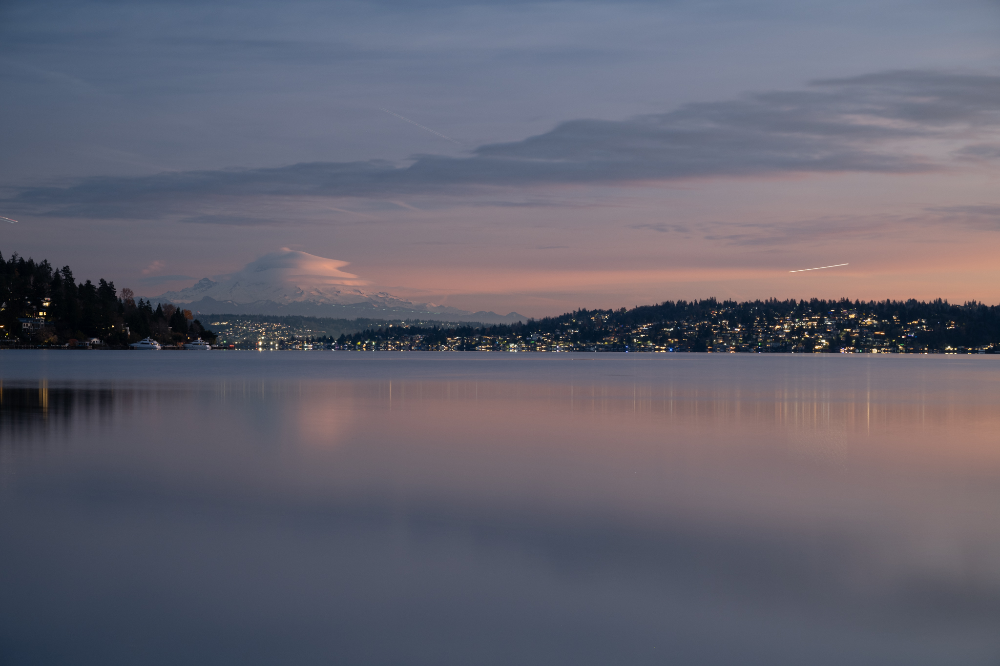
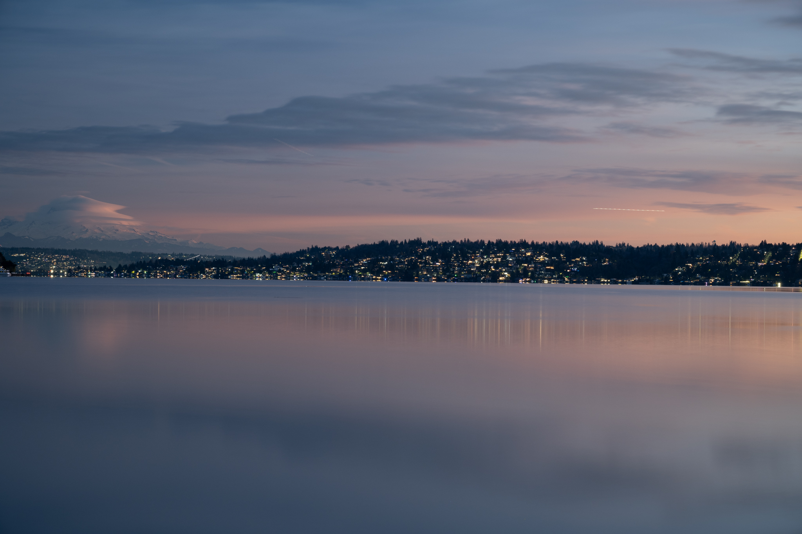
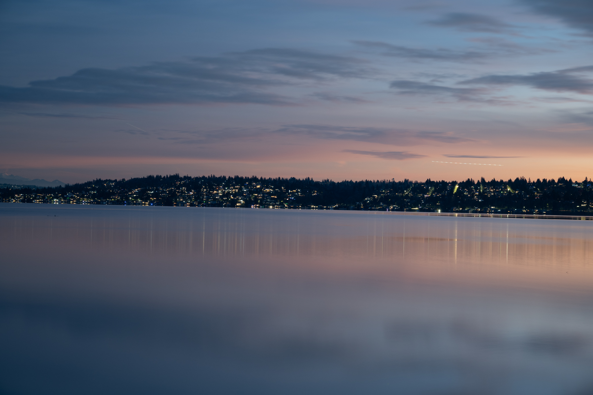
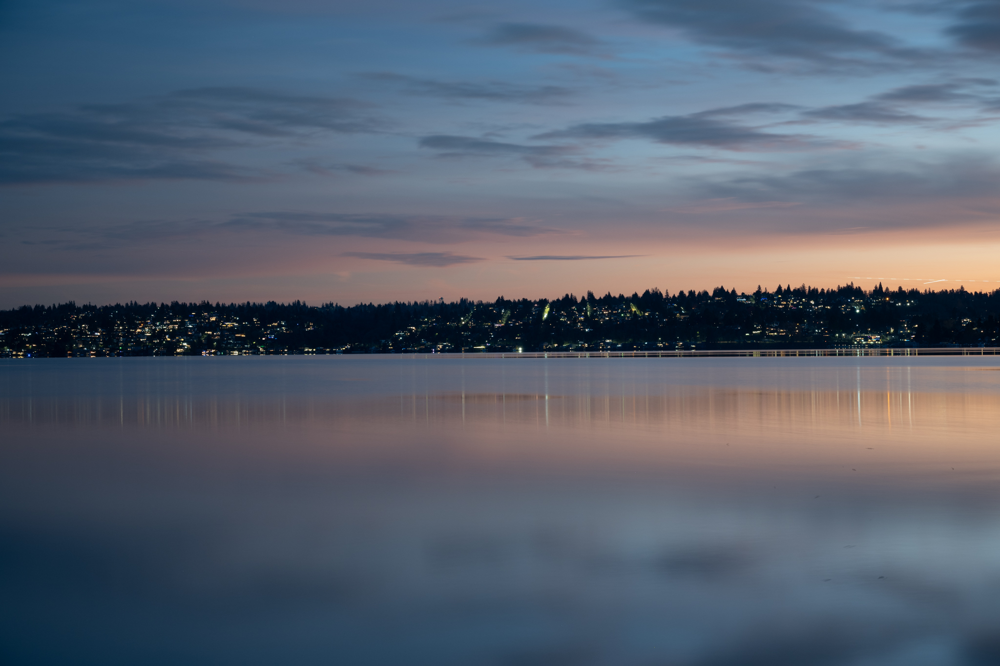
Set 2: Seattle City View
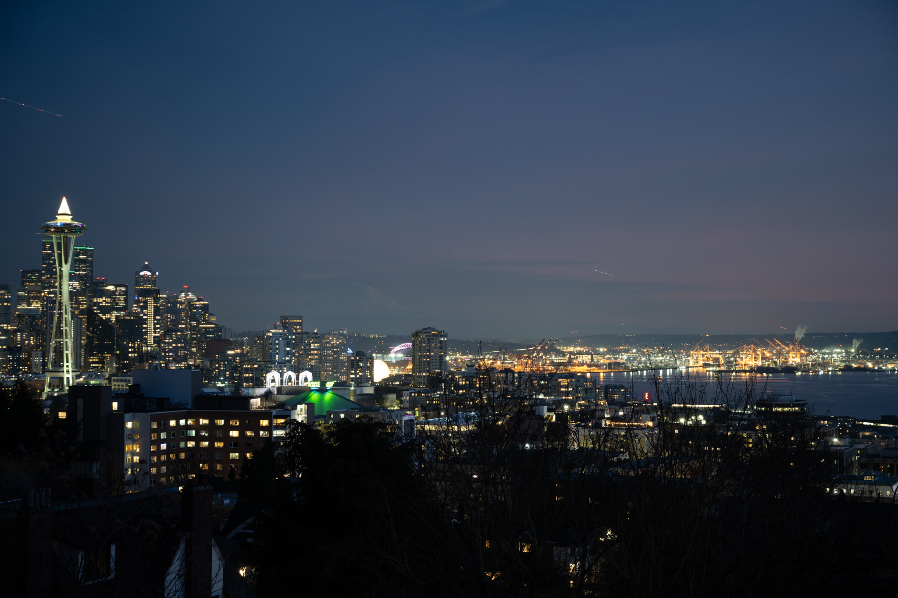
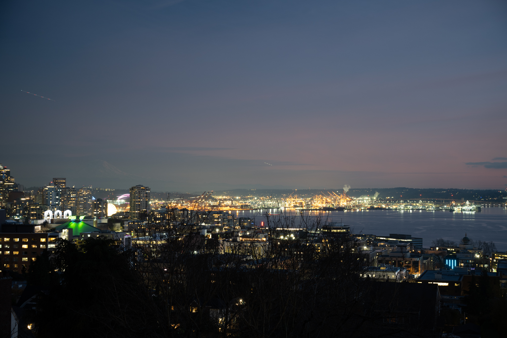
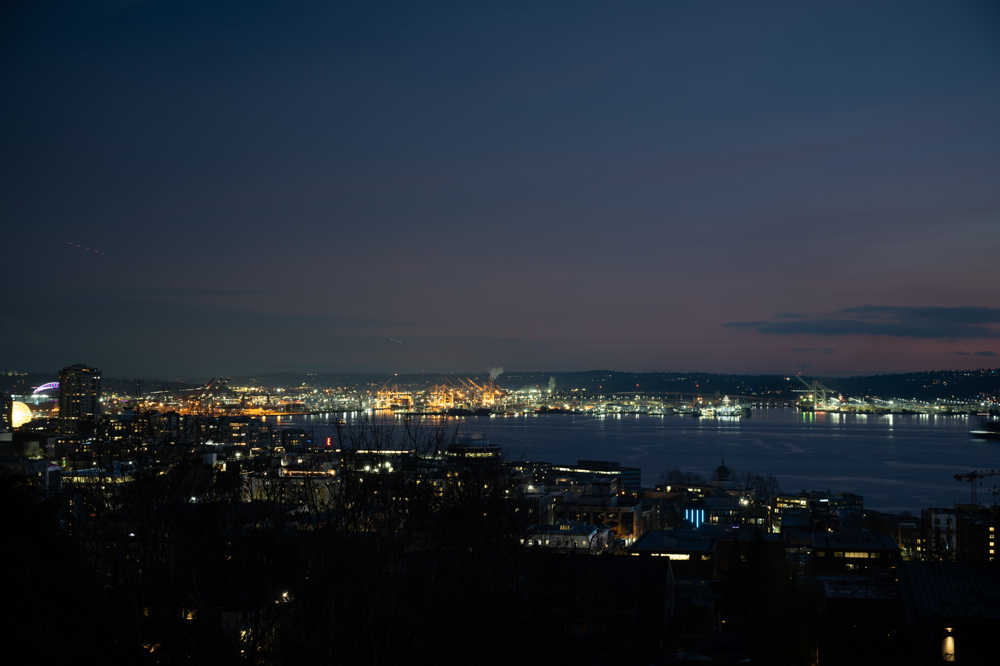
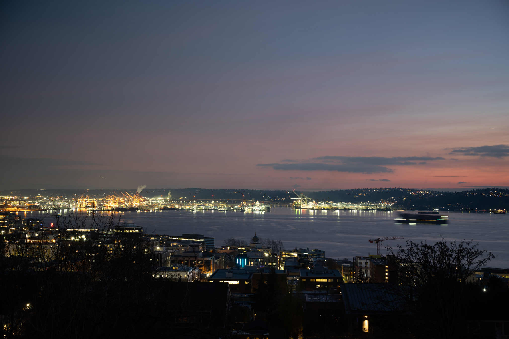
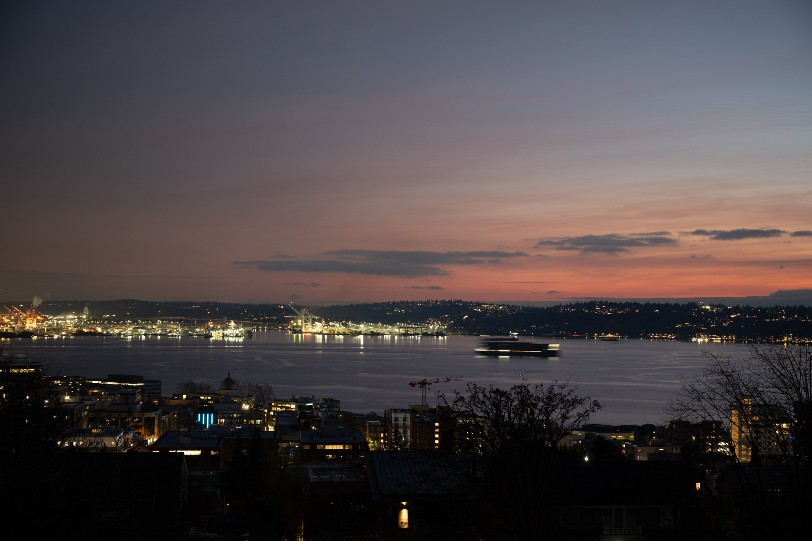
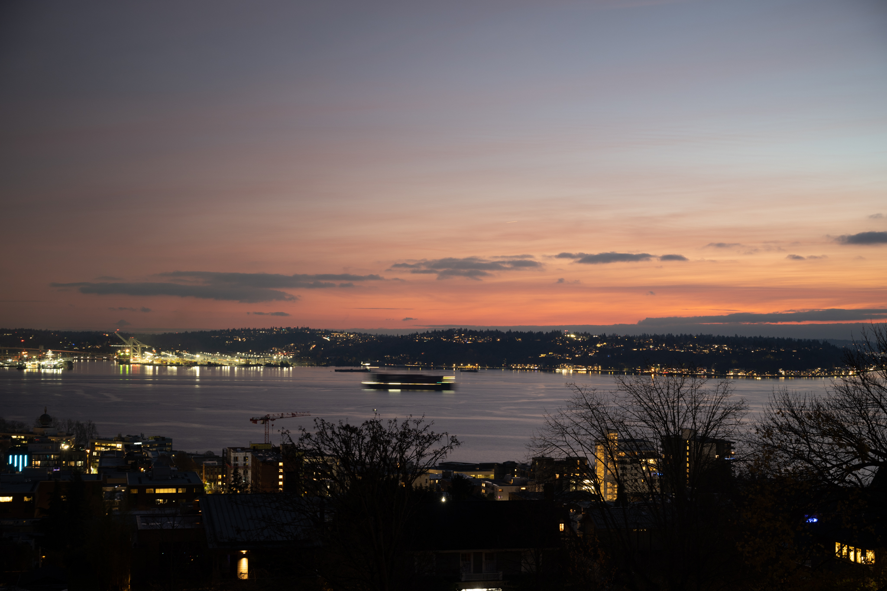
Part 2: Homography and Image Rectification
Understanding Homography
A homography is a projective transformation that maps points from one plane to another. In the context of images, it describes how a planar surface appears from different viewpoints. By computing the homography matrix H, we can transform images taken from different perspectives to align them or correct distortions.
1. Mathematical Foundation
Homography Equation
For a point (x, y) in one image and its corresponding point (x', y') in another image, the homography relationship is:
Where λ is a scaling factor and H is the 3×3 homography matrix with 8 degrees of freedom (h₃₃ = 1).
Solving for Homography
Given n ≥ 4 point correspondences, we can solve for H using a system of linear equations. Each point correspondence provides 2 equations, forming an overdetermined system that can be solved using least squares (SVD).
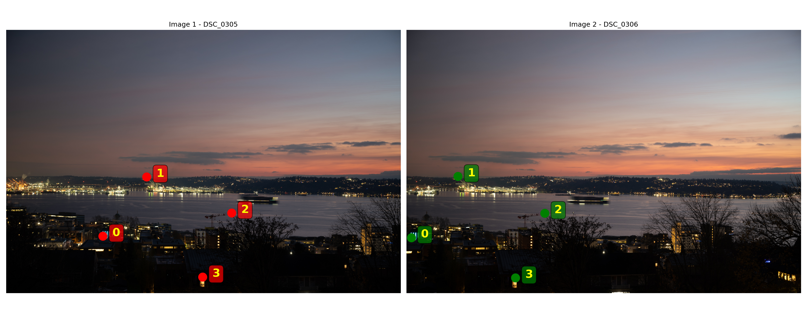
In this image pair, we compute the following H:
By applying this homography, we can "tilt" other images around a central image.
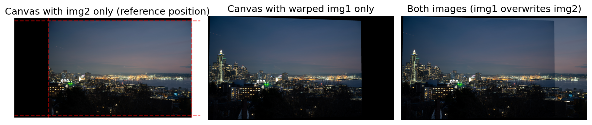
To verify our homography implementation, we can first test on a simple rectification task: transforming a tilted planar surface to appear frontal.
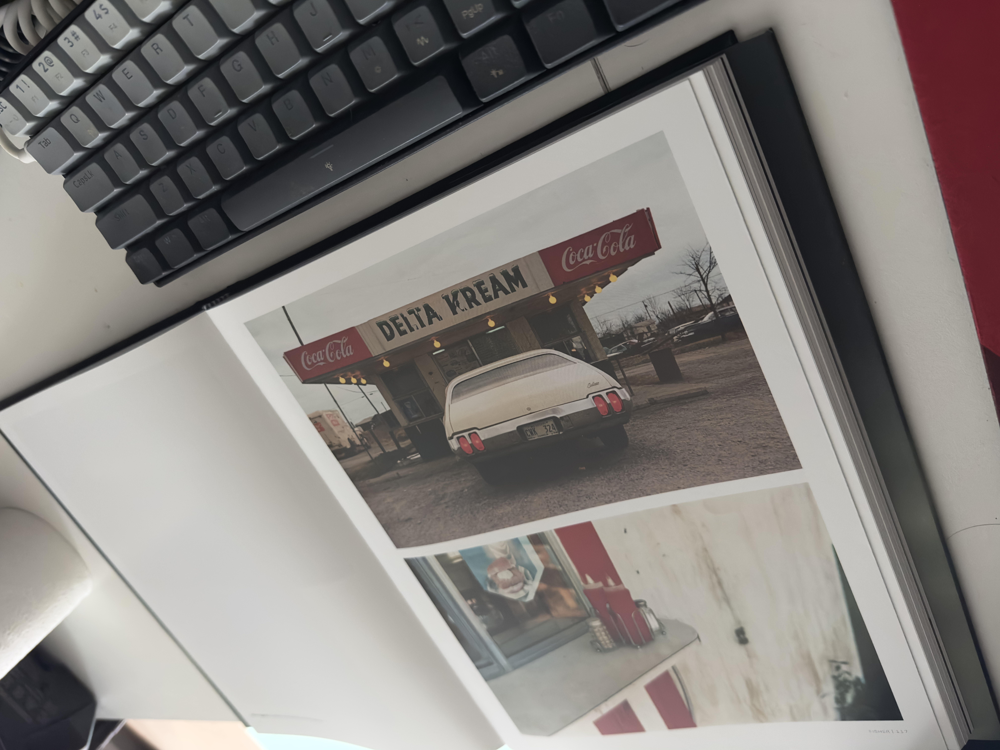
Original Image
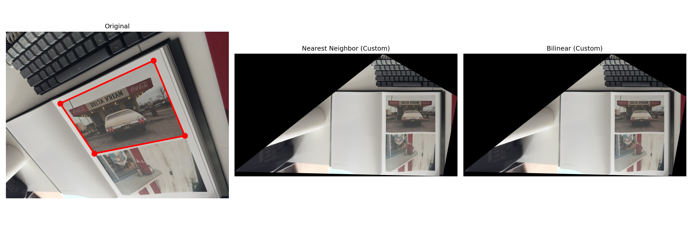
Rectified Image
Rectification Process
- Define correspondences: Select 4+ points on the tilted plane and their desired positions in the rectified view
- Compute homography: Solve the linear system to find the transformation matrix H
- Warp image: Apply H to transform the original image to the rectified view
- Verify: Check that parallel lines remain parallel and right angles are preserved